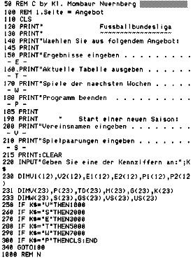
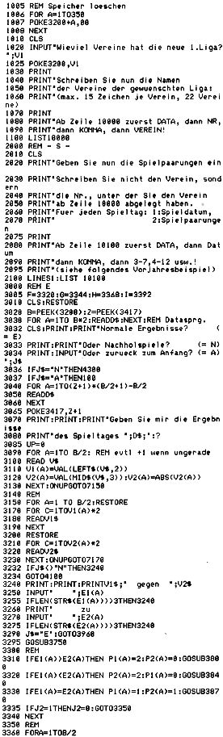

Nascom Journal |
Februar 1982 · Ausgabe 2 |
Dieses BASIC – Programm errechnet aus den eingegebenen Ergebnissen den Tabellenstand einer beliebigen Liga nach Punkten, Tordifferenz und erzielten Toren. Es berücksichtigt ausgefallene Spiele entsprechend und liefert 2 verschiedene Tabellen sowie die Spielpaarungen der nächsten Wochen.
Die Namen der Vereine und die Paarungen werden einmal jährlich eingegeben. Die Ergebnisse werden direkt in dem Speicherbereich 0C80 bis 0DFF abgelegt. Daher speichert man das gesamte Programm am besten von NAS – SYS aus mit dem W – Befehl 0C80 40C0. Geladen wird dann mit dem R – Befehl, danach Z – Befehl und RUN ! Damit man sich möglichst nicht vertippt, wird das Ergebnis z.B. 2:4 wie folgt eingegeben: 2 ENTER 4 ENTER S ENTER
Wer die DATA – Inhalte so stehen läßt und das HEX – Listing am Schluß noch lädt, der hat den Tabellenstand der 1. Fußballbundesliga nach dem 20. Spieltag vom 30.1.1982.
Für Journalleser kann ich noch anbieten: Wer mir eine Cassette schickt (mit Rückporto), der bekommt das Gesamtprogramm auf dem allerletzten Spielstand im Format Nascom 2 mit 1200 oder 300 Baud.
Wollen Sie die Tabelle für andere Sportarten, so sollten Sie noch wissen, daß bis zu 22 Vereine bei gerader Anzahl verarbeitet werden.

| Seite 5 von 32 |
|---|